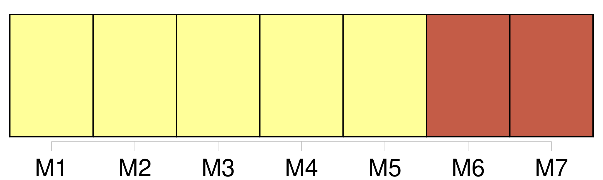
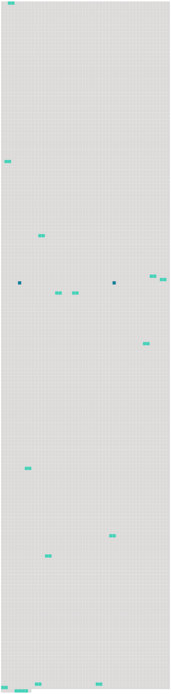

Longueur nb maillons : 17 mentions |
  |
Le grondement [du fleuve] monte derrière la maison. [130 phrases]
Mais peut-être y a-t -il en nous d’ autres puissances que l’ esprit et le cœur, d’ autres même que les sens, – de mystérieuses puissances, qui prennent le commandement dans les instants de néant où s’ endorment les autres ; et peut-être Melchior les avait -il rencontrées au fond des pâles prunelles qui le regardaient timidement, un soir qu’ il avait abordé la jeune fille sur la berge [du fleuve] , et qu’ il s’ était assis près d’ elle, dans les roseaux, – sans savoir pourquoi, – pour lui donner sa main. [59 phrases] Par instants, le grondement [du fleuve] montait plus fort dans le silence, comme un mugissement de bête. [29 phrases] [Le Fleuve] …… [4 phrases] [Le fleuve] gronde. Dans le silence, [sa] voix monte toute-puissante ; elle règne sur les êtres. Tantôt elle caresse leur sommeil et semble près de s’ assoupir elle -même, au bruissement de [ses] flots. [3 phrases]
Elle berce l’ enfant, ainsi qu’ elle berça pendant des siècles, de la naissance à la mort, les générations qui furent avant lui ; elle pénètre sa pensée, elle imprègne ses rêves, elle l’ entoure du manteau de ses fluides harmonies, qui l’ envelopperont encore, quand il sera couché dans le petit cimetière qui dort au bord de [l’ eau] et que baigne [le Rhin] … [46 phrases] Quand le vent souffle de l’ est, de très loin lui répondent les cloches des villages sur l’ autre rive [du fleuve] [104 phrases] Il inventait d’ attacher une vieille ficelle à son bâton magique, et il la jetait gravement dans [le fleuve] , attendant que le poisson vînt mordre. [42 phrases] Mais il savait reconnaître la grandeur de ses adversaires ; il l’ avait dit vingt fois : il eût donné un de ses bras, pour qu’ un tel homme fût né de ce côté [du Rhin] [9 phrases] Il s’ interrompait pour montrer le poing [au fleuve] , cracher avec mépris, et proférer des injures nobles, – il ne s’ abaissait pas aux autres. [96 phrases] La voiture s’ éloignait : et l’ on se retrouvait à l’ entrée du petit chemin creux près [du Rhin] [1 phrases] Le sentier serpentait presque au ras de [l’ eau] [1 phrases] Des aulnes se penchaient sur [le fleuve] , baignés jusqu’ à mi-corps. [3 phrases] La lumière était fine et brumeuse, l’ air frais, [le fleuve gris argent] |
 |
La ressource peut être téléchargée sur la page Ortolang
Si vous avez des questions ou vous voyez des erreurs, merci d'envoyer un mail à silvia.federzoni89@gmail.com
Site développé par S. Federzoni (contact)